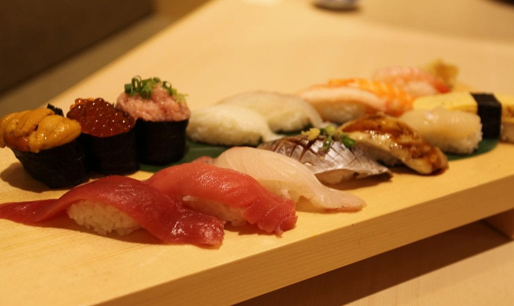
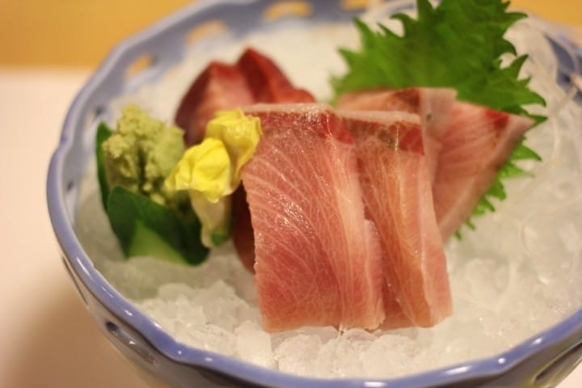
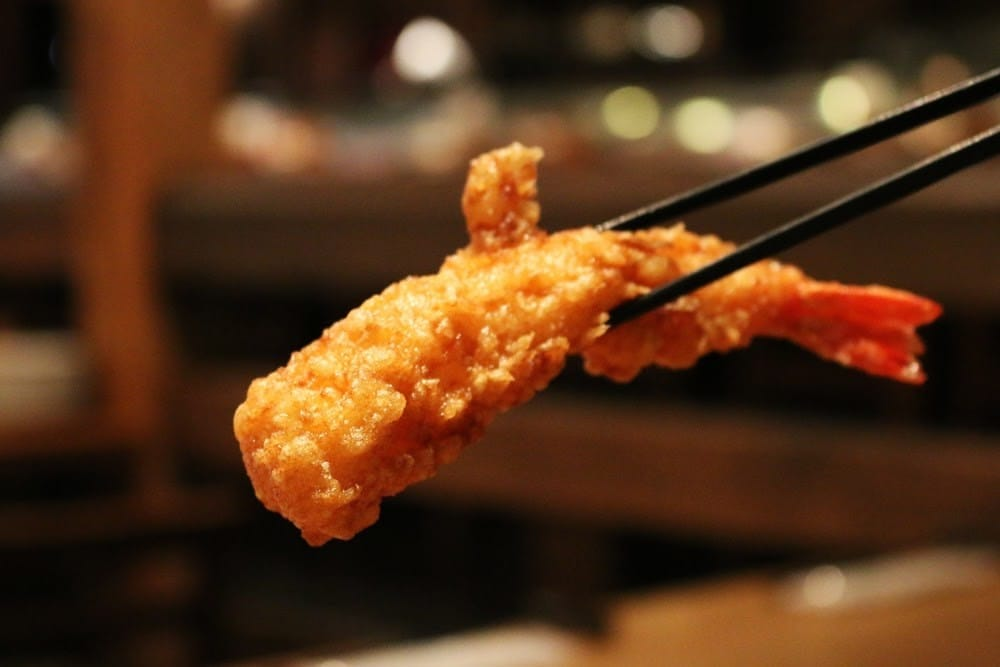
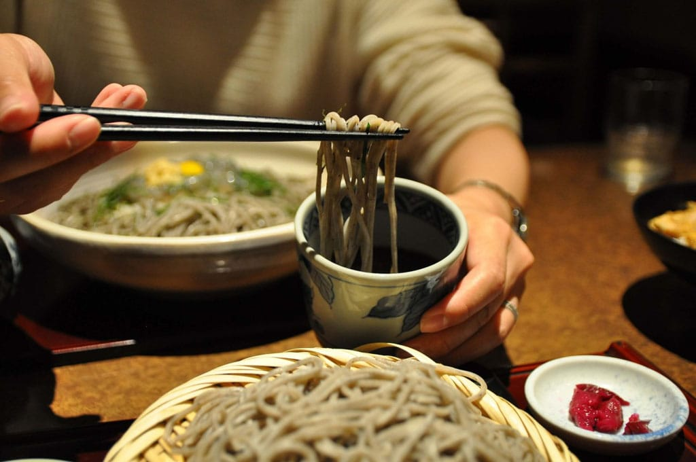
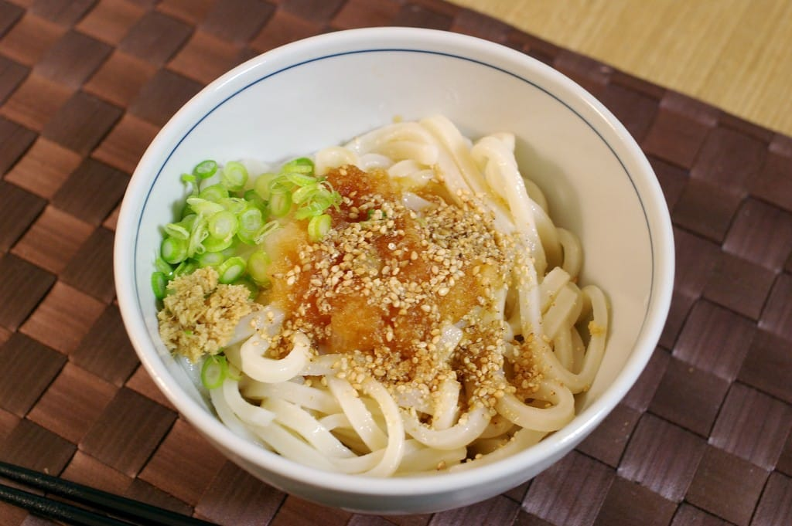
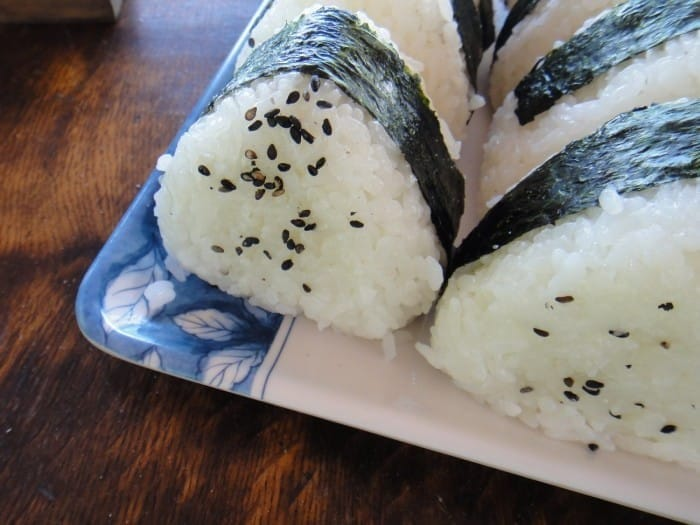
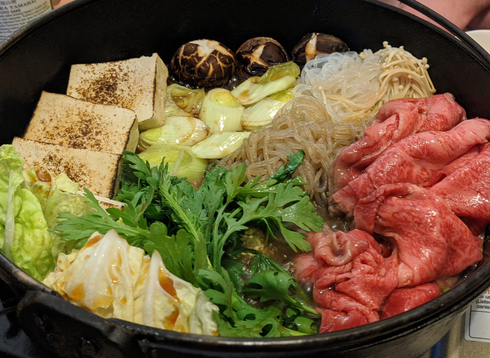

Menu

SushiSushi usually refers to a dish of pressed vinegared rice with a piece of raw fish or. |

SashimiSimilar to sushi but without the rice, sashimi is raw fish sliced into easy-to-eat pieces. |

Unagi - Grilled EelUnagi, or eel, is a fish known to be found mainly in rivers. |

TempuraTempura is a dish involving ingredients like seafood, meat, and vegetables covered in batter and deep-fried in oil. |

Soba - Buckwheat NoodlesSoba is a noodle dish made from buckwheat flour with water and flour, thinly spread and cut into noodles. |

Udon - Hearty Wheat NoodlesUdon is a unique dish known for its thick noodles, and is a very popular and traditional Japanese dish. |

Onigiri - Rice BallsOnigiri, may just look like plain rice, but they often have a savory filling inside and are wrapped with a salty sheet of nori seaweed. |

SukiyakiSukiyaki is cooked in a shallow iron pan, traditionally enjoyed in the fall and winter in Japan. |